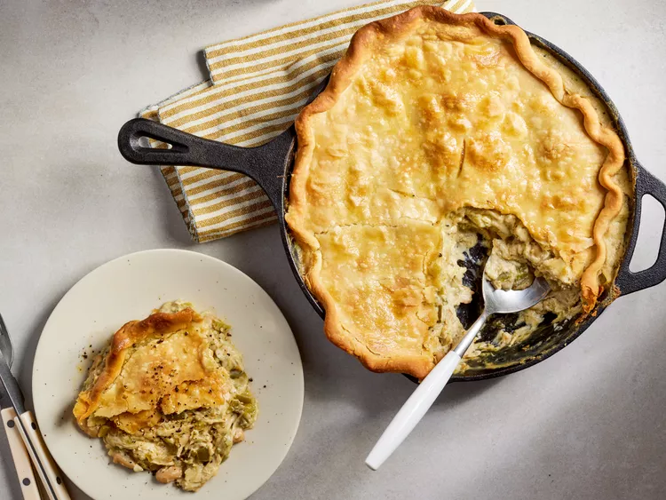

chicken pot pie recipe

Ingredients
- 1/3 cup salted butter
- 1 small yellow onion, chopped
- 1 small green bell pepper, chopped
- 2 garlic cloves, minced
- 1/3 cup all-purpose flour
- 2 teaspoons ground cumin
- 1 1/2 teaspoons dried oregano
- 1/2 teaspoon kosher salt
- 1/4 teaspoon freshly ground black pepper
- 2 cups chicken broth
- 2 cups shredded rotisserie chicken
- 1 (15-ounce) can white kidney beans, drained and rinsed
- 4 ounces 1/3-less-fat cream cheese, softened
- 1/2 cup jarred mild salsa verde
- 1 (4-ounce) can chopped green chilis, undrained
- 1 (9-inch) refrigerated pie crust (such as Pillsbury®)
Instructions
- Gather all ingredients. Preheat the oven to 425 degrees F (220 degrees C).
- Melt butter in a 10-inch cast-iron skillet over medium. Add onion, bell pepper, and garlic, and cook,
stirring often, until slightly softened and fragrant, about 2 minutes.
- Add flour and cook, stirring constantly, until mixture smells nutty, about 1 minute.
Stir cumin, dried oregano, salt, and black pepper until well combined.
- Gradually stir in broth and continue to cook over medium, stirring occasionally,
until thickened and smooth, about 3 minutes.
- Add chicken, beans, cream cheese, salsa verde, and chiles. Cook, stirring constantly,
until cream cheese is melted, about 2 minutes. Remove from heat and spread chicken mixture in an even layer.
Allow to cool for 10 minutes.
- While filling cools, unfurl pie crust on a sheet of parchment paper and roll into an 11-inch circle.
Fold dough edges under to create a 10-inch circle; crimp edges, if desired. Gently place pie crust over filling in skillet.
Use a paring knife, cut four 1-inch-long slits into top of pie crust to allow steam to escape.
- Bake in the preheated oven until golden brown and bubbly, 30 to 35 minutes. Allow pie to cool for 5 minutes before serving.
- Enjoy!